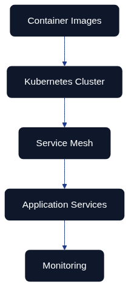
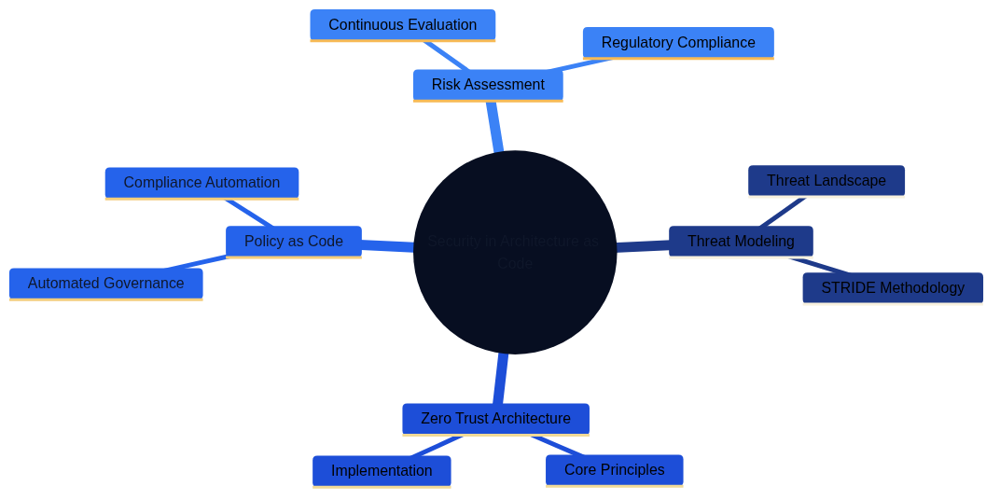

Policy and Security as Code in Detail

Figure 10.1 – Policy-as-Code guardrails embedded across the delivery lifecycle, from initial design through to production monitoring.
Introduction and context
European organisations operate in some of the world's most demanding regulatory environments. They must simultaneously honour GDPR, NIS2, sector-specific obligations from bodies such as the European Banking Authority and the UK's Financial Conduct Authority, and the relentless pace of cloud adoption. Security Fundamentals for Architecture as Code introduced the security principles that anchor this book. This chapter explores how those principles are executed as policy and security automation within Architecture as Code, turning written governance into executable guardrails that scale with continuous delivery.
Policy as Code (PaC) eliminates the delay of manual approvals and paper-heavy audits. Expressing governance requirements as version-controlled code gives teams the same advantages found elsewhere in Architecture as Code: traceability, repeatability, peer review, automated testing, and rapid rollback when something goes wrong. The narrative and examples in this chapter illustrate how European delivery teams can embrace PaC without sacrificing regulatory assurance.
Evolution of security management within Architecture as Code
Security automation in modern enterprises has matured through four distinct phases. Understanding that journey helps stakeholders decide how assertively to modernise today.
| Phase | Period | Approach | Characteristics | Limitations |
|---|---|---|---|---|
| Phase 1: Manual validation | 2010–2015 | Security teams reviewed infrastructure after the fact | Auditors compared live environments with policy documents weeks after release, findings logged manually | Slow feedback loop, fragile knowledge transfer, obsolete documentation, reactive fixes |
| Phase 2: Scripted automation | 2015–2018 | Teams scripted validations in Python, Bash, and PowerShell | CI workflow checks for risky ports, missing encryption, inconsistent tags | Improved speed but duplication, drift, brittle scripts, difficult enterprise sharing |
| Phase 3: Policy engine integration | 2018–2021 | Dedicated policy engines like Open Policy Agent (OPA) | Declarative policy languages, separation of enforcement logic from application code, Kubernetes Gatekeeper | Baseline controls enforced, but limited integration with broader governance |
| Phase 4: Holistic governance frameworks | 2021–present | Integrated design-time reviews, automated approvals, runtime drift detection | OSCAL integration, Terraform state connection, CI/CD events, compliance reporting | Policy execution as always-on capability, comprehensive audit evidence |
Policy-as-Code operating model

Figure 10.2 – A mind map of the continuous security operating model used throughout Architecture as Code.
Figure 10.2 summarises the mindset required to run PaC successfully. Threat modelling stays current by incorporating new attack vectors such as supply-chain compromise. Zero Trust architecture principles underpin access control and segmentation. Policy engines, risk assessment, and compliance automation all share the same data sets, allowing teams to reason about blast radius, regulatory coverage, and change velocity in one place.
Open Policy Agent (OPA) and Rego: foundation for policy-driven security
OPA has become the de facto standard for policy automation thanks to its lightweight deployment model and expressive Rego language. The engine evaluates decisions locally, so developers can run policies during unit tests while the same rules enforce guardrails inside Kubernetes, Terraform pipelines, or API gateways.
Architectural foundations for enterprise policy management
Organisations running mission-critical platforms typically adopt three architectural patterns:
- Decoupled evaluation: OPA runs as a sidecar, admission controller, or CLI verifier, keeping policy logic separate from application runtimes.
- Flexible distribution: Agents can pull policies from signed bundles or receive push updates from central services, supporting strict change-control processes.
- Bundle packaging: Teams package policies, data, metadata, and signatures together, enabling atomic roll-outs and rollbacks when requirements change.
Advanced Rego patterns for regulated workloads
Rego shines when encoding complex regulatory expectations. Teams typically model encryption rules, network segmentation, and data residency in the same policy module so that violations surface as a single report. Appendix entry 10_CODE_1 contains a full example tailored for EU and UK regulators. A trimmed excerpt below illustrates the structure:
package eu.enterprise.security
import rego.v1
encryption_required_services := {
"aws_s3_bucket", "aws_rds_instance", "aws_efs_file_system"
}
encryption_compliant[resource] {
resource := input.resources[_]
resource.type in encryption_required_services
validate_encryption(resource)
}
The complete module covers encryption strength, privileged port exposure, EU residency checks, and an aggregated compliance score. The findings feed directly into CI pipelines and risk dashboards.
Integrating policy automation into European enterprises
Enterprises connect OPA to their existing tooling so that decisions are auditable end to end. Policy evaluation logs stream to SIEM platforms such as Splunk or Azure Sentinel for immutable evidence. Identity-aware proxies verify that every policy change is authorised through enterprise single sign-on. Monitoring systems trigger alerts when violations cross risk thresholds so operations teams can react before incidents escalate. These integrations make PaC feel like a first-class participant in the delivery lifecycle rather than an afterthought.
OSCAL: Open Security Controls Assessment Language
While OPA ensures policies are enforced, OSCAL standardises how controls, evidence, and assessment data are described. Developed by NIST, OSCAL offers machine-readable formats (JSON, XML, YAML) that map requirements to actual implementations. For Architecture as Code teams, OSCAL becomes the translation layer between Terraform states, CI/CD runs, and external auditors.
OSCAL architecture and components
OSCAL is organised into complementary models:
| OSCAL Component | Purpose | Examples | Usage in Architecture as Code |
|---|---|---|---|
| Catalogues | Capture authoritative control statements from frameworks | NIST SP 800-53, GDPR articles, NIS2 directives | Foundation for organisational control baselines |
| Profiles | Tailor catalogues to organisation-specific needs | Selecting, modifying, or adding control language | Harmonise overlapping regulations, create industry-specific subsets |
| Component definitions | Describe how technical building blocks satisfy specific controls | Amazon RDS instance, AWS Network Firewall configurations | Map infrastructure modules to compliance requirements |
| System Security Plans (SSPs) | Assemble controls, components, and operational context | Complete audit documentation for a system | Single auditable document connecting requirements to implementation |
Crafting organisation-specific profiles
Profiles help European enterprises harmonise overlapping regulations. Appendix entry 10_CODE_2 shows how a financial institution can import NIST controls, overlay GDPR Article 32, and incorporate PSD2 requirements in one document. Parameters capture encryption algorithms, key management expectations, and other context so that auditors understand the intent behind every selection.
Component definitions and reusable evidence
Component definitions turn infrastructure modules into reusable compliance building blocks. Appendix entry 10_CODE_3 provides an example that documents Amazon RDS, Amazon S3, and AWS Network Firewall configurations. Each component maps implementation statements to control identifiers, making it straightforward to prove, for example, that storage encryption and logging are active.
Automating System Security Plans
Once profiles and component definitions exist, teams can automate the SSP itself. Appendix entry 10_CODE_4 includes a Python utility that parses Terraform, enriches it with component definitions, and emits an OSCAL-compliant SSP. The script integrates with AWS STS to stamp account identifiers and timestamps, ensuring that every generated SSP reflects the live estate.
Assure once, comply many in policy design
Policy-as-code catalogues embody the assure once, comply many mindset introduced in Governance as Code. Controls are written once, versioned, and then tagged with metadata that links each policy primitive to the external and internal obligations it satisfies. A single IAM policy module can therefore be evaluated across multiple frameworks without re-implementing business logic.
package enterprise.identity.mfa
control_id := "SEC-ID-001"
title := "Enforce MFA for all human identities in production"
violation[identity] {
identity := input.identities[_]
identity.type == "human"
not identity.mfa_enabled
}
framework_mappings := {
"iso_27001": ["A.5", "A.8"],
"soc_2": ["CC6.1", "CC6.6"],
"nist_800_53": ["IA-2(1)", "AC-2"],
"gdpr": ["Article 32"],
"internal": ["SEC-ID-001"]
}
evidence_sources := [
"ci/policy-report.json",
"evidence/mfa-snapshot-YYYYMM.json"
]
The policy is evaluated inside CI pipelines, Terraform plan checks, and periodic drift detection jobs. Each execution produces a machine-readable artefact—JSON reports, signed logs, configuration snapshots—that is versioned alongside the policy itself. Evidence is collected once, then catalogued so that auditors mapping ISO 27001 Annex A controls or SOC 2 Trust Service Criteria can rely on the same artefacts without triggering duplicate reviews. The Evidence as Code chapter expands on how pipelines package and publish those artefacts, while Compliance and Regulatory Adherence shows how mappings are rendered in a Control Mapping Matrix for downstream consumption.
Implementation roadmap for European delivery teams
Successful PaC programmes blend technology with process change. A staged roadmap typically includes:
- Policy inventory: Catalogue existing manual controls, identify overlaps, and prioritise high-risk scenarios such as public exposure of administrative ports.
- Pilot automation: Implement a thin slice of OPA policies in a non-production CI pipeline, capturing metrics on prevented misconfigurations.
- Evidence harmonisation: Map policies to OSCAL catalogues and create the first organisation-specific profile so that governance teams can trace coverage.
- Operational integration: Stream evaluation logs to security operations, define escalation workflows, and update service-level objectives to include policy violations.
- Continuous improvement: Expand policy libraries, refactor shared modules, and review KPIs with stakeholders to ensure automation keeps pace with regulatory change.
Key takeaways
- PaC transforms governance from a periodic activity into a continuous safety net that keeps pace with daily releases.
- OPA and Rego provide a portable, testable way to encode complex EU and UK regulatory requirements.
- OSCAL links policy enforcement with audit evidence, reducing the overhead of external assessments.
- Diagrams in Figures 10.1 and 10.2 illustrate how policy guardrails span the delivery lifecycle and how capability building blocks interrelate.
- Detailed Rego, OSCAL, and automation listings live in Appendix entries 10_CODE_1 to 10_CODE_4 for engineers who need implementation guidance.